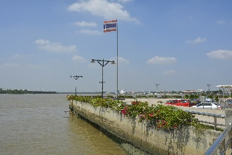
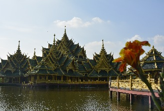
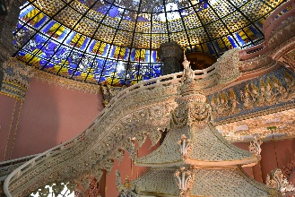

Samut Prakan (เมืองสมุทรปราการ)
 Mueang Samut Prakan, também conhecida como Paknam Samut Prakan (ปากน้ำสมุทรปราการ), está localizada na região metropolitana de Bangcoc, há 29km ao sul do centro da capital, ao longo da área onde o rio Chao Phraya desemboca no Golfo da Tailândia.É a capital da província de Samut Prakan.
A cidade é bem antiga, sua fundação data do período Ayutthaya, e por isso abriga vários locais históricos e culturais.
Sua população é a maior entre as cidades tailandeses (com status de distrito, o que exclui a capital Bangcoc), com cerca de 541.000 habitantes em estimativa de 2018.
Como chegar à Samut Prakan
De carro: você pode ir pela Sukhumvit Road ou pela Highway 303.De ônibus: ônibus com ar condicionado da BMTA (Bangkok Mass Transit Authority) vão para Samut Prakan como linhas urbanas normais. As] linhas são as seguintes: 502 (Sam Rong - Pak Khlong Talat), 506 (Pakkred - Phra Pradaeng), 507 (Sam Rong - Tha Phra), 508 (Pak Nam - Tha Ratchaworadit), 511 (Pak Nam - Pratunam - Ratchadamnoen Klang Road "Khao San" - Southern Bus Terminal Sai Tai), 513 (Rangsit - Pu Chao Saming Phrai), 523 (Sam Rong Thewet pela via expressa), 525 (Pak Nam - Tha Chang), 102 (Pak Nam - Chong Nonsee), 126 (Nonthaburi - Sam Rong), 129 (Thang Duan - Kasetsart University - Sam Rong), 142 (Wat Lau - Samut Prakan), 145 (Suan Chatuchak - Samut Prakan). Há também os ônibus sem ar condicionado, nas linhas 2 (Sam Rong - Pak Khlong Talad), 6 (Phra Pradaeng - Bang Lamphu), 13 (Rangsit - Phu Chao Saming Phrai), 20 (Pom Phra Chun - Tha Nam Din Daeng), 23 (Sam Rong Thewet pela via expressa), 25 (Pak Nam - Tha Chang), 45 (Sam Rong - Ratchaprasong), 82 (Phra Pradaeng - Bang Lamphu), 102 (Pak Nam - Chong Nonsi), 116 (Samrong - Sathorn), 129 (Kasetsart University - Sam Rong pela via expressa), 138 (Chatuchak - Phra Pradaeng pela via expressa), 145 (Suan Chatuchak - Pak Nam).
As atrações de Samut Prakan
Ancient City (เมืองโบราณ / Muang Boran / Cidade Antiga)
Um dos maiores museus outdoor do mundo, levou 3 anos para ser construído. Trata-se de uma impressionante versão compacta da Tailândia criada por um vendedor da
Mercedes Benz no país, que amava tanto a arte e a cultura local a ponto de criar esse enorme parque, em uma área em formato similar ao do território tailandês e
com várias reproduções de prédios, monumentos, estátuas e até montanhas posicionadas exatamente onde os originais estão no mapa! Há inúmeras reproduções de pavilhões
templos, chedis, santuários, casas tradicionais, vilas e mercados. Algumas construções foram movidas de seus locais originais para cá.
Há também algumas esculturas sobre as crenças, lendas e folclore tailandeses.
O mesmo fundador criou também o Erawan Museum (embora tenha morrido antes do término da construção, sua família concluiu a obra).
É um ótimo local para aprender sobre a Tailândia em pouco tempo.
Você pode pegar uma bicicleta emprestada para fazer o longo percurso, que se for acompanhado com atenção, leva no mínimo umas 4 ou 5 horas, portanto reserve pelo menos metade de um dia para conhecer o local, embora o mais indicado seja um dia completo.
Há também algumas esculturas sobre as crenças, lendas e folclore tailandeses.
O mesmo fundador criou também o Erawan Museum (embora tenha morrido antes do término da construção, sua família concluiu a obra).
É um ótimo local para aprender sobre a Tailândia em pouco tempo.
Você pode pegar uma bicicleta emprestada para fazer o longo percurso, que se for acompanhado com atenção, leva no mínimo umas 4 ou 5 horas, portanto reserve pelo menos metade de um dia para conhecer o local, embora o mais indicado seja um dia completo.

Endereço: Km 33 da Old Sukhumvit Road, bairro de Bangpoo.
Entrada: estrangeiros adultos pagam ฿$ 700 e crianças, ฿$ 350, ambos com direito ao aluguel de uma bicicleta. Tailandeses adultos pagam ฿$ 350.
Como chegar: fica há mais de 1 hora do centro de Bangcoc.De bts/ônibus: pegue o BTS Skytrain até o final da linha Paknam, descendo na estação Bearing. Siga a leste na Sukhumvit Road até o KM 33. Pegue o ônibus com ar condicionado nº 511 para Paknam (฿$ 22) e peça para descer o mais próximo possível do Muang Boran. Após descer, pegue o songthaew n°36 (฿$ 15) para o resto do caminho (avise o motorista que vai descer no Muang Boran, ou fique olhando para a esquerda através do canal). Leva uns 25, 30 minutos de songthaew. Para voltar, pegue o mesmo micro-ônibus no outro lado da rua. Em Paknam, pegue o ônibus 25 de volta à Sukhumvit (฿$ 15).
De taxi: você pode ir e voltar de táxi, mais isso custará entre ฿$ 700 e ฿$ 1200 (ida e volta, dependendo de onde você partir em Bangcoc). Você pode pegar o Skytrain até a estação Kheha, e de lá pegar um táxi até o Muang Boran (uns 4km, cerca de ฿$ 120 para a ida, mais ฿$ 120 para a volta).
De carro: pegue a via expressa para Samrong-Samut Prakan, vire à esquerda para a antiga Sukhumvit Road, e a Ancient City está à esquerda no km 33.
Horário: diariamente das 8:00 às 18:00.
Site: www.ancientcity.com
☎: +66 0 2323-9253.
Voltar à lista
Entrada: estrangeiros adultos pagam ฿$ 700 e crianças, ฿$ 350, ambos com direito ao aluguel de uma bicicleta. Tailandeses adultos pagam ฿$ 350.
Como chegar: fica há mais de 1 hora do centro de Bangcoc.De bts/ônibus: pegue o BTS Skytrain até o final da linha Paknam, descendo na estação Bearing. Siga a leste na Sukhumvit Road até o KM 33. Pegue o ônibus com ar condicionado nº 511 para Paknam (฿$ 22) e peça para descer o mais próximo possível do Muang Boran. Após descer, pegue o songthaew n°36 (฿$ 15) para o resto do caminho (avise o motorista que vai descer no Muang Boran, ou fique olhando para a esquerda através do canal). Leva uns 25, 30 minutos de songthaew. Para voltar, pegue o mesmo micro-ônibus no outro lado da rua. Em Paknam, pegue o ônibus 25 de volta à Sukhumvit (฿$ 15).
De taxi: você pode ir e voltar de táxi, mais isso custará entre ฿$ 700 e ฿$ 1200 (ida e volta, dependendo de onde você partir em Bangcoc). Você pode pegar o Skytrain até a estação Kheha, e de lá pegar um táxi até o Muang Boran (uns 4km, cerca de ฿$ 120 para a ida, mais ฿$ 120 para a volta).
De carro: pegue a via expressa para Samrong-Samut Prakan, vire à esquerda para a antiga Sukhumvit Road, e a Ancient City está à esquerda no km 33.
Horário: diariamente das 8:00 às 18:00.
Site: www.ancientcity.com
☎: +66 0 2323-9253.
Erawan Museum
Enorme elefante de 29m (44m contando a base), feito todo em bronze.
A estátua é facilmente vista na saída da Sukhumwit Road.
Dentro do elefante encontra-se uma bela escadaria (e até elevadores) e antiguidades, parte de uma valiosa coleção de objetos religiosos de Kun Lek Viriyapant, dono do museu.
Os 3 andares interiores representam 3 mundos (Inferno, Terra e Céu).
Você pode tirar fotos nos 2 primeiros níveis apenas.
Destaque também para o belo jardim com esculturas de figuras mitológicas tailandesas.
A estátua é facilmente vista na saída da Sukhumwit Road.
Dentro do elefante encontra-se uma bela escadaria (e até elevadores) e antiguidades, parte de uma valiosa coleção de objetos religiosos de Kun Lek Viriyapant, dono do museu.
Os 3 andares interiores representam 3 mundos (Inferno, Terra e Céu).
Você pode tirar fotos nos 2 primeiros níveis apenas.
Destaque também para o belo jardim com esculturas de figuras mitológicas tailandesas.

Local: Sukhumwit Road, entrando em Samut Prakan. Pegando um táxi na estação Bearing do Sky Train, você deve gastar uns 15 minutos e
฿$ 70 para chegar ao museu. Além da opção do táxi na estação Bearing, você pode pegar os ônibus de linha convencionais 25, 142 e 365, ou
os ônibus com ar condicionado 102, 507, 511 e 536.
Horário: das 8:00 às 18:00.
Entrada: ฿$ 300 (adultos, em Nov. de 2013)
Voltar à lista
Horário: das 8:00 às 18:00.
Entrada: ฿$ 300 (adultos, em Nov. de 2013)
Crocodile Farm & Zoo
Maior fazenda de crocodilos do mundo, onde você vê os funcionários brincando com eles e se arriscando pondo suas cabeças dentro de suas bocas.
Há também um museu sobre a pré-história no local.
Como em toda atração que envolve animais, seja cético com relação aos cuidados dispensados à eles, pois nunca se sabe as condições em que são treinados ou mantidos.
O ideal é evitar tais atrações.
Há também um museu sobre a pré-história no local.
Como em toda atração que envolve animais, seja cético com relação aos cuidados dispensados à eles, pois nunca se sabe as condições em que são treinados ou mantidos.
O ideal é evitar tais atrações.
Como chegar: as linhas de ônibus 45ก, 142, 508 (passa pelo Sanam Luang), 513 e 536 saem de Bangcoc e passam pela Crocodile Farm.
Entrada: ฿$ 300 (adultos) ou ฿$ 200 (crianças).
Horário: diariamente das 7:00 às 18:00.
☎: +66 (0)2 387-0020.
Voltar à lista
Entrada: ฿$ 300 (adultos) ou ฿$ 200 (crianças).
Horário: diariamente das 7:00 às 18:00.
☎: +66 (0)2 387-0020.
Phra Samut Chedi
Belo chedi que é o símbolo da província de Samut Prakan.
Foi construído pelo rei Rama IV como ponto de referência para navegadores.
O templo ao lado do chedi só foi construído 130 anos depois.
Foi construído pelo rei Rama IV como ponto de referência para navegadores.
O templo ao lado do chedi só foi construído 130 anos depois.
Endereço: Pak Klong, subdistrito de Bang Plakod.
Como chegar: saia da estação Bearing do Skytrain, pegue um ônibus local para Paknam. Caminhe até o pier no Paknam Market. Pegue o ferry, que deve custar uns ฿$ 4 até o Phra Samut Chedi Pier. O percurso leva uns 10 minutos de barco. Descendo no pier, dá pra ir apé até o templo.
Voltar à lista
Como chegar: saia da estação Bearing do Skytrain, pegue um ônibus local para Paknam. Caminhe até o pier no Paknam Market. Pegue o ferry, que deve custar uns ฿$ 4 até o Phra Samut Chedi Pier. O percurso leva uns 10 minutos de barco. Descendo no pier, dá pra ir apé até o templo.
Wat Pichai Songkram
Templo antigo com uma longa história desde o período de Ayutthaya, o que pode ser notado pelo estilo
da sala de ordenação com uma base curvada. Outra construção interessante é o chedi, decorado com cerâmica e construído no estilo
Rattanakosin.
Local: rua Prakonchai, Tambon Paknam, Amphoe Muang.
Voltar à lista